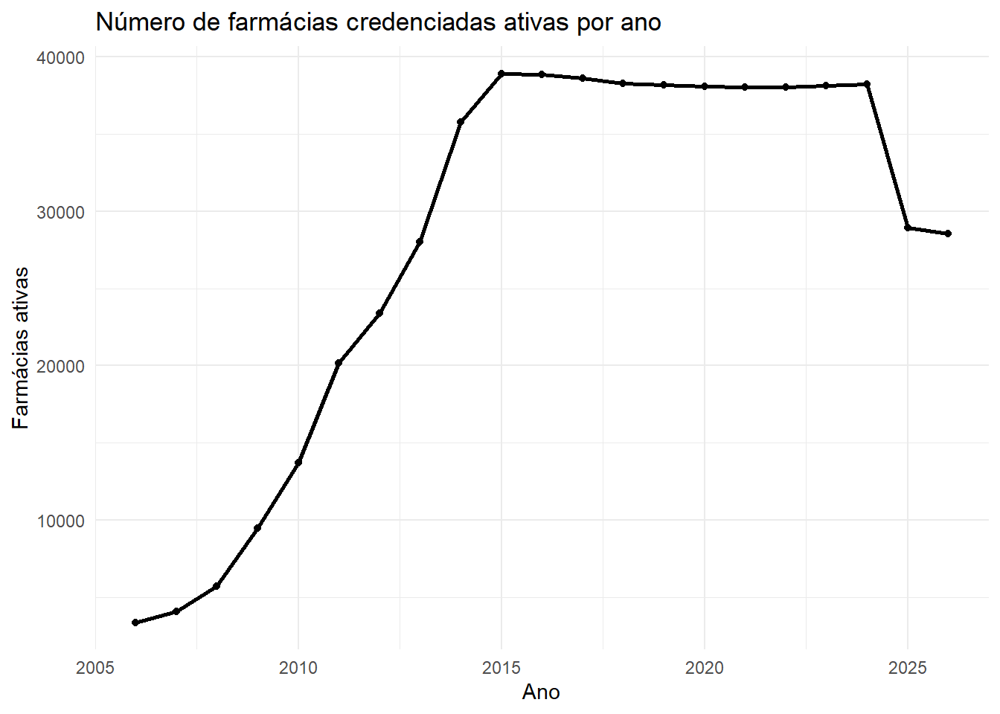

library(here)
library(arrow)
library(dplyr)
library(arrow)
library(readxl)
library(stringr)
library(ggplot2)
library(lubridate)
library(readr)
library(tidyr)
#library(pbapply)
library(purrr)bases-pfp: Fluxo de processamento de dados para gerar planilha estruturada de informações sobre credenciamentos no Programa Farmácia Popular a nível nacional (fevereiro de 2026)
Clara L. S. Penz

Dicionário de Siglas
- RF: Receita Federal
- MS: Ministério da Saúde
- PFP: Programa Farmácia Popular
- OSF: Open Science Framework
- CNPJ: Cadastro Nacional de Pessoa Jurídica
Ativar bibliotecas necessárias
Definir diretório de trabalho
Note
⚠️ Necessário ajustar conforme o processamento em cada máquina.
here()[1] "D:/MESTRADO/GIT_NOTEBOOK/bases-pfp"Criar dirtórios para armazenamento
Definir e aplicar função para pré-processamento da RF
Essa parte pode ser ignorada, trata-se do registro sobre como foi feito o tratamento de dados da RF. Os arquivos referentes à RF já estão disponibilizados em .parquet na OSF. Os arquivos são referentes ao mês de março de 2026.
Descompactar e organizar arquivos do CNPJ
Necessário realizar dowload manual de todos os arquivos, que devem ser mantidos na pasta “1-inputs”. Favor, selecionar todos os arquivos para um dowload único. Aqui, utilizaremos os arquivos de março de 2026, por esse motivo a pasta dentro de 1-inputs é chamada de “cnpj_202603
Note
⚠️ O download pode levar várias horas!
# unzip_cnpj <- function(zip_principal,
# dir_principal,
# saida = "descompactado",
# remove_all_zips = TRUE) {
#
# saida_dir <- file.path(dir_principal, saida)
# dir.create(saida_dir, showWarnings = FALSE, recursive = TRUE)
#
# unzip(zip_principal, exdir = saida_dir)
#
# zips_internos <- list.files(saida_dir,
# pattern = "\\.zip$",
# full.names = TRUE,
# recursive = TRUE)
#
# dir_estab <- file.path(saida_dir, "estabelecimentos")
# dir_emp <- file.path(saida_dir, "empresas")
# dir_soc <- file.path(saida_dir, "socios")
# dir_outros <- file.path(saida_dir, "demais_arquivos")
#
# dirs <- c(dir_estab, dir_emp, dir_soc, dir_outros)
# lapply(dirs, dir.create, showWarnings = FALSE, recursive = TRUE)
#
# get_pasta <- function(nome) {
# if (grepl("Estabelecimentos", nome, ignore.case = TRUE)) return(dir_estab)
# if (grepl("Empresas", nome, ignore.case = TRUE)) return(dir_emp)
# if (grepl("Socios", nome, ignore.case = TRUE)) return(dir_soc)
# return(dir_outros)
# }
#
# for (z in zips_internos) {
# destino <- get_pasta(basename(z))
# subdir <- file.path(destino,
# tools::file_path_sans_ext(basename(z)))
#
# dir.create(subdir, showWarnings = FALSE, recursive = TRUE)
# unzip(z, exdir = subdir)
# }
#
# if (remove_all_zips) {
# file.remove(c(zip_principal, zips_internos))
# }
#
# invisible(list(
# output_dir = saida_dir,
# inner_zips = length(zips_internos)
# ))
# }Executar função
# unzip_cnpj(
# zip_principal = "1-inputs/cnpj_202603/download.zip",
# dir_principal = "1-inputs/cnpj_202603",
# saida = "descompactado",
# remove_all_zips = TRUE
# )Trasformar arquivos de estabelecimento em .parquet
# arquivos_estab <- list.files(
# "1-inputs/cnpj_202603/descompactado/estabelecimentos",
# full.names = TRUE,
# recursive = TRUE
# )
#
# dir.create(
# "1-inputs/cnpj_202603/parquet_estabelecimentos",
# recursive = TRUE,
# showWarnings = FALSE
# )
#
# colunas <- c(
# "id_cnpj_basico",
# "ds_cnpj_ordem",
# "ds_cnpj_dv",
# "tp_matriz_filial",
# "no_nome_fantasia",
# "tp_situacao_cadastral",
# "dt_situacao_cadastral",
# "ds_situacao_cadastral",
# "no_cidade_exterior",
# "co_pais",
# "dt_inicio_atividade",
# "co_cnae_fiscal_principal",
# "co_cnae_fiscal_secundario",
# "no_tipo_logradouro",
# "no_logradouro",
# "nu_numero",
# "no_complemento",
# "no_bairro",
# "co_cep",
# "sg_uf",
# "co_municipio_tom",
# "nu_ddd_1",
# "nu_telefone_1",
# "nu_ddd_2",
# "nu_telefone_2",
# "nu_ddd_fax",
# "nu_fax",
# "no_correio_eletronico",
# "tp_situacao_especial",
# "dt_situacao_especial"
# )
#
# pblapply(
# arquivos_estab,
# function(arq) {
# message("Convertendo: ", basename(arq))
#
# df <- read_delim(
# file = arq,
# delim = ";",
# col_names = colunas,
# col_types = cols(.default = "c"),
# locale = locale(encoding = "Latin1"),
# show_col_types = FALSE
# )
#
# nome_saida <- file.path(
# "1-inputs/cnpj_202603/parquet_estabelecimentos",
# paste0(tools::file_path_sans_ext(basename(arq)), ".parquet")
# )
#
# write_parquet(df, nome_saida)
# }
# )Ler e ajustar arquivos do MS (PFP)
Definir função para leitura de arquivos armazenados em repositório da OSF
ler_osf_xlsx <- function(url, ...) {
file_id <- stringr::str_extract(url, "[A-Za-z0-9]+$")
download_url <- paste0("https://osf.io/download/", file_id, "/")
temp_file <- tempfile(fileext = ".xlsx")
download.file(
download_url,
destfile = temp_file,
mode = "wb"
)
readxl::read_excel(temp_file, ...)
}Farmácias credenciadas
pfp_cred <- ler_osf_xlsx(
"https://osf.io/az4w7/files/kxztu",
skip = 13,
col_names = c(
"uf",
"co_municipio_ibge",
"no_municipio",
"co_cnpj",
"no_farmacia",
"no_endereco",
"no_bairro",
"dt_credenciamento"
),
col_types = c(
"text", "text", "text", "text",
"text", "text", "text", "date"
)
) %>%
# ajustar cnpjs que não estejam padronizados
mutate(
co_cnpj = str_remove_all(co_cnpj, "\\D"),
co_cnpj = str_pad(co_cnpj, 14, side = "left", pad = "0"),
co_cnpj = str_c(
str_sub(co_cnpj, 1, 2), ".",
str_sub(co_cnpj, 3, 5), ".",
str_sub(co_cnpj, 6, 8), "/",
str_sub(co_cnpj, 9, 12), "-",
str_sub(co_cnpj, 13, 14)
)
)Warning: Expecting date in I1049 / R1049C9: got '30/01/2026'Warning: Expecting date in I1218 / R1218C9: got '30/01/2026'Warning: Expecting date in I1789 / R1789C9: got '30/01/2026'Warning: Expecting date in I1791 / R1791C9: got '30/01/2026'Warning: Expecting date in I4738 / R4738C9: got '30/01/2026'Warning: Expecting date in I5296 / R5296C9: got '30/01/2026'Warning: Expecting date in I12796 / R12796C9: got '30/01/2026'Warning: Expecting date in I21311 / R21311C9: got '30/01/2026'Warning: Expecting date in I22687 / R22687C9: got '30/01/2026'Warning: Expecting date in I28551 / R28551C9: got '30/01/2026'pfp_cred$dt_descredenciamento <- NAFarmácias descredenciadas
pfp_descred <- ler_osf_xlsx(
"https://osf.io/az4w7/files/qw5rg",
skip = 1,
col_names = c(
"uf",
"co_municipio_ibge",
"no_municipio",
"co_cnpj",
"no_farmacia",
"no_endereco",
"no_bairro",
"dt_credenciamento",
"dt_descredenciamento"
),
col_types = rep("text", 9)
) %>%
dplyr::mutate(
dplyr::across(
starts_with("dt_"),
~ dplyr::case_when(
stringr::str_detect(.x, "^\\d+$") ~
as.Date(as.numeric(.x), origin = "1899-12-30"),
TRUE ~ lubridate::dmy(.x)
)
)
) %>%
# ajustar cnpjs que não estejam padronizados
mutate(
co_cnpj = str_remove_all(co_cnpj, "\\D"),
co_cnpj = str_pad(co_cnpj, 14, side = "left", pad = "0"),
co_cnpj = str_c(
str_sub(co_cnpj, 1, 2), ".",
str_sub(co_cnpj, 3, 5), ".",
str_sub(co_cnpj, 6, 8), "/",
str_sub(co_cnpj, 9, 12), "-",
str_sub(co_cnpj, 13, 14)
)
)Warning: There were 4 warnings in `dplyr::mutate()`.
The first warning was:
ℹ In argument: `dplyr::across(...)`.
Caused by warning in `as.Date()`:
! NAs introduzidos por coerção
ℹ Run `dplyr::last_dplyr_warnings()` to see the 3 remaining warnings.Unir planilhas de credenciamentos e descredenciamentos
pfp_total <- rbind(pfp_cred, pfp_descred)Testar número de credenciamentos por ano
anos <- data.frame(
ano = seq(
year(min(pfp_total$dt_credenciamento, na.rm = TRUE)),
year(Sys.Date())
)
)
ativas_ano <- anos %>%
rowwise() %>%
mutate(
n_ativas = sum(
pfp_total$dt_credenciamento <= as.Date(paste0(ano, "-12-31")) &
(
is.na(pfp_total$dt_descredenciamento) |
pfp_total$dt_descredenciamento > as.Date(paste0(ano, "-12-31"))
),
na.rm = TRUE
)
) %>%
ungroup()
ggplot(ativas_ano, aes(x = ano, y = n_ativas)) +
geom_line(linewidth = 1) +
geom_point() +
labs(
title = "Número de farmácias credenciadas ativas por ano",
x = "Ano",
y = "Farmácias ativas"
) +
theme_minimal()
Testar número de credenciamentos por ano e unidade federativa
anos <- seq(
year(min(pfp_total$dt_credenciamento, na.rm = TRUE)),
year(Sys.Date())
)
ufs <- sort(unique(pfp_total$uf))
painel_longo <- expand.grid(
uf = ufs,
ano = anos,
stringsAsFactors = FALSE
)
painel_longo$n_ativas <- mapply(
function(uf_atual, ano_atual) {
data_ref <- as.Date(paste0(ano_atual, "-12-31"))
sum(
pfp_total$uf == uf_atual &
pfp_total$dt_credenciamento <= data_ref &
(
is.na(pfp_total$dt_descredenciamento) |
pfp_total$dt_descredenciamento > data_ref
),
na.rm = TRUE
)
},
painel_longo$uf,
painel_longo$ano
)
painel_uf <- painel_longo %>%
pivot_wider(
names_from = ano,
values_from = n_ativas,
values_fill = 0
) %>%
arrange(uf)
DT::datatable(
painel_uf,
extensions = "FixedColumns",
options = list(
scrollX = TRUE,
scrollY = "500px",
paging = FALSE,
fixedColumns = list(leftColumns = 2)
)
)Unir dados da RF e do PFP
Baixar arquivos .parquet da RF
Definir URLs para acesso aos arquivos da RF disponibilizados na OSF
arquivos_estab <- c(
"https://osf.io/download/4wkpr/",
"https://osf.io/download/8ecvh/",
"https://osf.io/download/nadr7/",
"https://osf.io/download/bge43/",
"https://osf.io/download/nhujp/",
"https://osf.io/download/fkqxj/",
"https://osf.io/download/x58c9/",
"https://osf.io/download/2sjrg/",
"https://osf.io/download/4e5vb/",
"https://osf.io/download/d73an/"
)Aumentar tempo máximo de download nas configurações Baixar os arquivos para a pasta cnpj_202603/estab_parquet dentro de 1-inputs
options(timeout = 12000)
dir.create("1-inputs/cnpj_202603/estab_parquet", recursive = TRUE, showWarnings = FALSE)
arquivos_estab <- c(
"https://osf.io/download/4wkpr/",
"https://osf.io/download/8ecvh/",
"https://osf.io/download/nadr7/",
"https://osf.io/download/bge43/",
"https://osf.io/download/nhujp/",
"https://osf.io/download/fkqxj/",
"https://osf.io/download/x58c9/",
"https://osf.io/download/2sjrg/",
"https://osf.io/download/4e5vb/",
"https://osf.io/download/d73an/"
)
for (i in seq_along(arquivos_estab)) {
destino <- file.path(
"1-inputs/cnpj_202603/estab_parquet",
paste0("estab_", i, ".parquet")
)
cat("Baixando:", arquivos_estab[i], "\n")
try(
download.file(
url = arquivos_estab[i],
destfile = destino,
mode = "wb",
method = "libcurl"
)
)
}Ler e filtrar arquivos da RF
Criar vetor de armazenamento dos CNPJs das farmácias credenciadas ao PFP.
cnpjs_pfp <- unique(pfp_total$co_cnpj)estab_pfp <- open_dataset("1-inputs/cnpj_202603/estab_parquet") %>%
select(
id_cnpj_basico,
ds_cnpj_ordem,
ds_cnpj_dv,
tp_matriz_filial,
co_cnae_fiscal_principal,
no_tipo_logradouro,
no_logradouro,
nu_numero
) %>%
mutate(
id_cnpj_basico = str_pad(as.character(id_cnpj_basico), 8, pad = "0"),
ds_cnpj_ordem = str_pad(as.character(ds_cnpj_ordem), 4, pad = "0"),
ds_cnpj_dv = str_pad(as.character(ds_cnpj_dv), 2, pad = "0"),
co_cnpj = str_c(
str_sub(id_cnpj_basico, 1, 2), ".",
str_sub(id_cnpj_basico, 3, 5), ".",
str_sub(id_cnpj_basico, 6, 8), "/",
ds_cnpj_ordem, "-",
ds_cnpj_dv
)
) %>%
filter(co_cnpj %in% cnpjs_pfp) %>%
collect()Unir planilhas da RF e do MS
estab_pfp_completo <- pfp_total %>%
left_join(estab_pfp, by = "co_cnpj")Escrever planilha em .csv
write.csv(estab_pfp_completo, "3-outputs/estab_pbp_completo.csv")Testar dados do PFP a partir de amostra
Citação
Para referenciar este trabalho, utilize o seguinte formato:
Penz, C. L. S. bases-pfp: Fluxo de processamento de dados para gerar planilha estruturada de informações sobre credenciamentos no Programa Farmácia Popular a nível nacional (fevereiro de 2026) [Software]. Universidade de São Paulo. https://clarapenz.github.io/bases-pfp/
Para usuários de LaTEX:
@software{penz_2025,
title = {bases-pfp: Fluxo de processamento de dados para gerar planilha estruturada de informações sobre credenciamentos no Programa Farmácia Popular a nível nacional (fevereiro de 2026)},
author = {Clara de Lima e Silva Penz},
year = {2025},
address = {São Paulo},
institution = {Universidade de São Paulo},
langid = {pt},
url = {https://clarapenz.github.io/bases-pfp/}
}Licença


As fontes de dados originais podem estar sujeitas a seus próprios termos e condições de licenciamento.
O código deste repositório está licenciado sob a Licença Pública Geral GNU versão 3, enquanto o relatório está disponível sob a licença Creative Commons Atribuição-NãoComercial-CompartilhaIgual 4.0 Internacional.
Copyright (C) 2025 Clara L. S. Penz
The code in this report is free software: you can redistribute it and/or
modify it under the terms of the GNU General Public License as published by the
Free Software Foundation, either version 3 of the License, or (at your option)
any later version.
This program is distributed in the hope that it will be useful, but WITHOUT ANY
WARRANTY; without even the implied warranty of MERCHANTABILITY or FITNESS FOR A
PARTICULAR PURPOSE. See the GNU General Public License for more details.
You should have received a copy of the GNU General Public License along with
this program. If not, see <https://www.gnu.org/licenses/>.Agradecimentos
Não seria possível organizar este fluxo de processamento sem o conhecimento compartilhado por pesquisadores e trabalhadores do Centro de Estudos da Metrópole, Universidade de São Paulo, Brasil.
Também destaco o papel do Departamento de Geografia da Universidade de São Paulo, bem como da Coordenação de Aperfeiçoamento de Pessoal de Nível Superior (CAPES), respectivamente pelo apoio e fomento a esta pesquisa.
Referências
BRASIL. Ministério da Saúde. Dados de farmácias credenciadas ao Programa Farmácia Popular do Brasil. Consulta realizada por meio do Portal da Transparência. Brasília, DF, fev. 2026.
BRASIL. Secretaria Especial da Receita Federal do Brasil. Dados abertos CNPJ – março 2026. Brasília, DF: Receita Federal do Brasil, 2026. Disponível em: https://dados.receita.fazenda.gov.br/CNPJ/. Acesso em: 18 maio 2026.